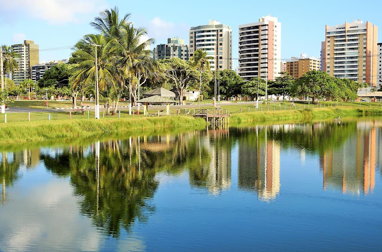

Parque da Sementeira

O parque pode ser utilizado pelos aracajuanos e turistas para pratica de atividades esportivas e de lazer, pesquisas ambientais
além de outras atividades em contato com a natureza. O espaço conta com parque infantil, campo de futebol
quadra poliesportiva, espaço com aparelhos para exercicios físicos, pista para caminhada, quiosques para piqueniques, sanitários, lagos e iluminação adequada.
Atrativos do Parque da Sementeira
- Parque infantil
- Campo de Futebol
- Quadra poliesportiva
- Aparelhos para exercicios fisicos
- Quiosques para piqueniques
- Sanitários
- lagos e áreas verdes
- iluminação adequada para visitas noturnas